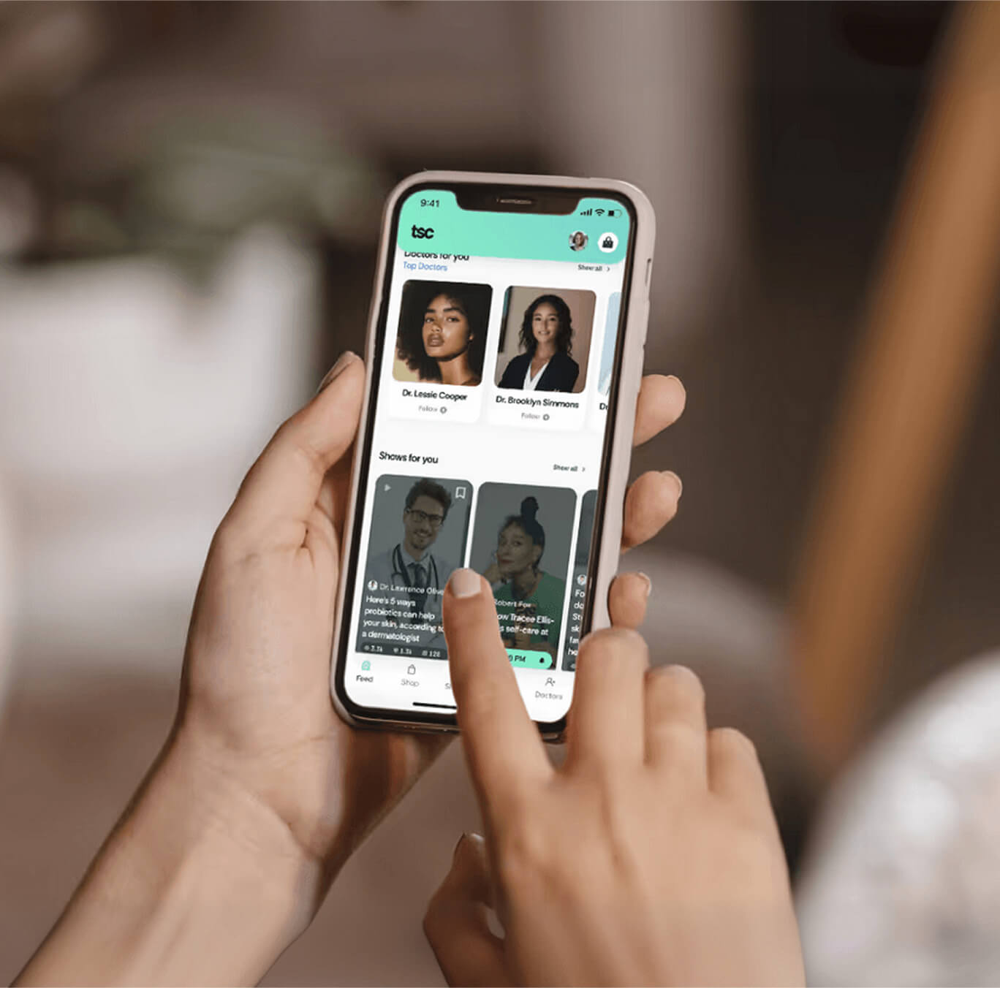
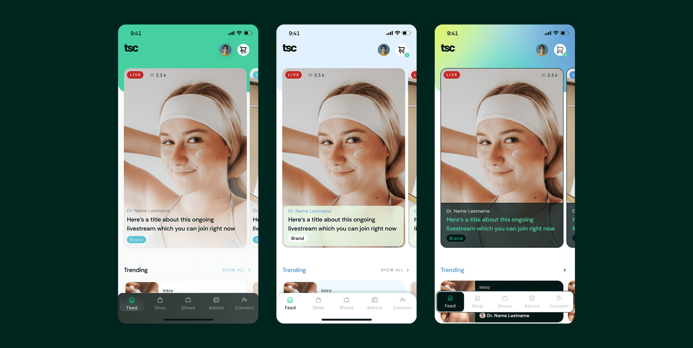

The Skin Club
Planted: Mar 27, 2026. Last tended:
mobile app
website
skincare
figma
2022


Offloading info
Getting into the client’s mind
Going into a project which already has a defined vision, or even more, a launched version doing something closer to the future vision, means having part of the work done, but also putting more effort into offloading the requirements for the project. So the very first step with TSC was being briefed about current state of the product and where we needed to take it, with the following being the pillars of the all-new live stream shopping & curating skincare app we needed to design:
SHOP
Livestream shopping
CUSTOMIZED
Personalized products
1-ON-1
Doctors appointments
LOGGING
Self-skincare tracking
LEARN
Content from professionals/h3>

Foundation
Getting the experience right
After understanding the vision, we started getting into the details of the app, step by step. The very first one: being on the same page with the client as to what we need the app to do and how it needs to be navigated on a broad view. So we started by creating a navigational flow map to depict what the perfect user journey could be, and detailing specific features and needs for the product.
One step at a time
Wireframing the interface
Once everyone was in agreement with the flow map, we started building the skeleton of our interface: the wireframes. With these we started getting a more granular vision into what each piece of the app would do and where it would live, as well as starting to give it a voice through the addition of copy to non-styled screens for the interface.

Visual Experiments
Exploring visuals
This product already had an ongoing brand. It had strong elements, which we took as a foundation such as: a good logo, nice font usage and a powerful color palette. We took this and gave them a more mobile app friendly UI approach which was lacking before. Even though we already had a starting point, we developed three visual proposals taking on different nuances of the app: young, clinical or playful.

Refining
Settling on a defined UI
After defining the winner UI, we expanded that to the rest of the app on top of the wireframes on a molecular way: first applying to styles, then components and then detailing on individual screens. The resulting UI was clinical and almost healthcare oriented to reflect the professionalism, security and verified type of skincare professionals the product had. But, at the same time, through vibrant colors and approachable style choices, it was also fresh, young and vibrant in order to appeal to the younger generations which our demographics was mostly made of.

A hub for the skin care industry
Settling on a defined UI
This way, the resulting product came to life, consisting on a 360 hub for the skincare lovers and enthusiasts where the users would be able to accomplish everything they need on this field: from learning to final purchase, and beyond:
Watch
Watch livestreams, current and past, where verified doctors interact with users, showcase the products and provide live answers.

Shop
A wide array of products including leading brands with exclusive deals, imbued with the TSC data base.

Grow
1-on-1 expert advice and content tailored to the customer’s needs.

Connect
Community building around the sharing of knowledge and expertise about skincare.